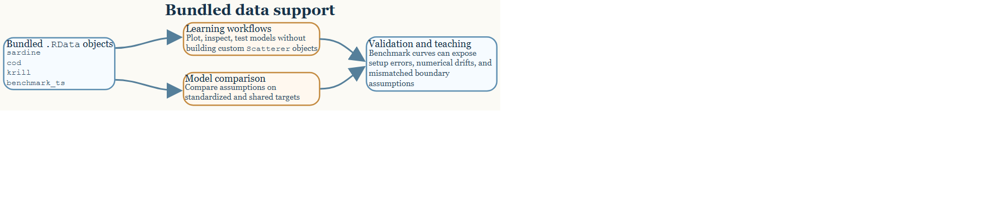

Introduction
The bundled example objects are anchored to published fish, krill, and benchmark resources that make it easier to reproduce known workflows before introducing custom geometry (Clay and Horne 1994; McGehee, O’Driscoll, and Traykovski 1998; Jech et al. 2015).
The package includes bundled data objects that are useful for learning the workflow, benchmarking model behavior, and reproducing examples without first building every target from scratch. Those objects are not meant to replace careful object construction, but they do reduce the distance between installation and a meaningful first calculation.

Bundled objects
The most obvious data entry points are sardine,
cod, krill, and benchmark_ts.
These objects are valuable because they span different target types and
different use cases. Some are pre-built scatterers meant for workflow
practice, while others are benchmark resources meant for validation and
regression-style checking.
The important thing is that these datasets do not all play the same
role. sardine and cod are composite fish-like
targets. krill is a fluid-like elongated target.
benchmark_ts is not a scatterer at all, but a stored
collection of benchmark model outputs.
What each dataset actually contains
The sardine dataset is a pre-generated SBF
scatterer representing a sardine-like target with a fully inflated
swimbladder. Its stored structure includes separate body
and bladder components, each with its own position matrix,
material properties, and orientation. The associated
shape_parameters slot also preserves body and swimbladder
lengths and the number of discrete cylinders used to represent each
component. The packaged geometry follows the sardine entry distributed
through the NOAA Fisheries KRM reference collection and archived in
echoSMs, and the object metadata identifies the target as
Sardinops sagax caerulea following Conti and Demer (2003). That
makes sardine especially useful when the goal is to
practice workflows for anatomically composite fish-like targets rather
than for single-component bodies.
The cod dataset plays a similar role. It is also a
pre-generated SBF scatterer with separate body and
swimbladder components and with the same general object structure:
metadata, model-parameter container, model-results container, body
component, bladder component, and shape metadata. In practical terms,
the packaged object corresponds to the Atlantic cod example used by Clay
and Horne (1994) and matches the Cod D entry preserved in the historical
KRM shape collection archived in echoSMs. Because both
cod and sardine are composite fish-like
objects, they are natural starting points for workflows in which a user
wants to inspect component structure, test fish-body modeling
assumptions, or compare body-plus-bladder targets against simpler
approximations.
The krill dataset is different. It is a pre-generated
FLS scatterer representing a krill-like body shape based on
the McGehee et al. (1998) geometry. Instead of separate body and bladder
components, it stores a single fluid-like body with a position matrix,
local cylinder radii, density contrast g, sound-speed
contrast h, and an orientation angle. Its
shape_parameters record body length, number of cylinders,
and units. This makes krill a natural demonstration object
for DWBA, SDWBA, and related weak-scattering
workflows.
The benchmark_ts dataset serves a different purpose
again. It is a packaged list of benchmark model outputs associated with
Jech et al. (2015). In practical package use, it functions as a stored
reference resource rather than as a target object. The validation
workflow uses it to compare canonical model outputs against expected
benchmark curves, especially for sphere, finite-cylinder, and
prolate-spheroid cases. The packaged object follows the Jech benchmark
definitions and tabulated comparison curves as archived in the
echoSMs reference resources.
Why example objects matter
Bundled objects shorten the distance between installation and a meaningful first model run. They also make it easier to compare the behavior of different models on a shared target definition, which is often the cleanest way to understand whether a discrepancy comes from model assumptions or from the target itself. Because the objects are already part of the package, they also make it easier to write reproducible examples that do not rely on external files or undocumented preprocessing steps.
They are especially useful because they expose several distinct
object patterns that recur throughout the package. A user can see what a
composite SBF object looks like by inspecting
sardine or cod, and can see what a fluid-like
segmented FLS object looks like by inspecting
krill. That object-level familiarity makes later custom
workflows much easier.
A practical way to use them
For a first pass, it is often useful to treat the example objects as workflow fixtures rather than as final scientific targets. Load the object, inspect its structure, run or review a model call, and then compare the plotted result against your physical expectations. Once that sequence is comfortable, the same workflow can be transferred to custom shapes and scatterers with much less risk of confusing a setup error for a model problem.
For example, sardine and cod are useful
when learning how composite fish-like scatterers are organized and when
checking workflows that depend on separate body and bladder geometry.
krill is useful when learning elongated fluid-like
workflows and when exploring how orientation or weak-scattering
assumptions affect model output. benchmark_ts is most
useful when the question is whether a known reference solution can be
reproduced rather than whether a target object can be manipulated.
The benchmark-oriented dataset deserves a slightly different mindset
from the pre-built scatterers. When using benchmark_ts, the
goal is not simply to obtain a plausible curve. The goal is to verify
agreement with a stored reference under the same assumptions, grid, and
numerical settings.
Why these distinctions help
These datasets are most helpful when they are matched to the right
question. If the question is “what does an SBF object look
like in practice?”, then sardine or cod are
natural starting points. If the question is “what does a weakly
scattering elongated target look like in object form?”, then
krill is the better choice. If the question is “can a
canonical benchmark curve be reproduced?”, then
benchmark_ts is the relevant dataset.
That distinction may sound small, but it often determines whether a user reaches for the right example at the right stage of the workflow.